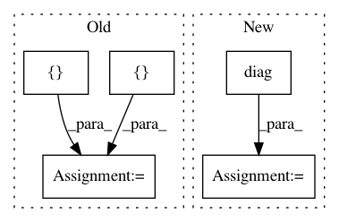

a7a12d157766b69cf4b1ddbb5fcdacfe485dc6fa,test/kernels/test_rbf_kernel.py,TestRBFKernel,test_ard,#TestRBFKernel#,17
Before Change
return RBFKernel(ard_num_dims=num_dims, **kwargs)
def test_ard(self):
a = torch.tensor([[[1, 2], [2, 4]]], dtype=torch.float)
b = torch.tensor([[[1, 3], [0, 4]]], dtype=torch.float)
lengthscales = torch.tensor([1, 2], dtype=torch.float).view(1, 1, 2)
kernel = RBFKernel(ard_num_dims=2)
kernel.initialize(lengthscale=lengthscales)
kernel.eval()
scaled_a = a.div(lengthscales)
scaled_b = b.div(lengthscales)
actual = (scaled_a.unsqueeze(-2) - scaled_b.unsqueeze(-3)).pow(2).sum(dim=-1).mul_(-0.5).exp()
res = kernel(a, b).evaluate()
self.assertLess(torch.norm(res - actual), 1e-5)
// Diag
res = kernel(a, b).diag()
actual = torch.cat([actual[i].diag().unsqueeze(0) for i in range(actual.size(0))])
self.assertLess(torch.norm(res - actual), 1e-5)
// batch_dims
actual = scaled_a.transpose(-1, -2).unsqueeze(-1) - scaled_b.transpose(-1, -2).unsqueeze(-2)
After Change
// Diag
res = kernel(a, b).diag()
actual = actual.diag()
self.assertLess(torch.norm(res - actual), 1e-5)
// batch_dims
actual = scaled_a.transpose(-1, -2).unsqueeze(-1) - scaled_b.transpose(-1, -2).unsqueeze(-2)
In pattern: SUPERPATTERN
Frequency: 6
Non-data size: 5
Instances
Project Name: cornellius-gp/gpytorch
Commit Name: a7a12d157766b69cf4b1ddbb5fcdacfe485dc6fa
Time: 2019-04-03
Author: gpleiss@gmail.com
File Name: test/kernels/test_rbf_kernel.py
Class Name: TestRBFKernel
Method Name: test_ard
Project Name: sassoftware/python-dlpy
Commit Name: d04b0d52e8789d32d71c099e904a0617756884ac
Time: 2019-09-17
Author: Xiangqian.Hu@SAS.COM
File Name: dlpy/metrics.py
Class Name:
Method Name: accuracy_score
Project Name: nipy/dipy
Commit Name: fc4efecea2385b689803f6e0e91ce13c4ed0d764
Time: 2014-12-12
Author: arokem@gmail.com
File Name: dipy/reconst/sfm.py
Class Name:
Method Name: sfm_design_matrix
Project Name: cornellius-gp/gpytorch
Commit Name: a7a12d157766b69cf4b1ddbb5fcdacfe485dc6fa
Time: 2019-04-03
Author: gpleiss@gmail.com
File Name: test/kernels/test_scale_kernel.py
Class Name: TestScaleKernel
Method Name: test_ard
Project Name: cornellius-gp/gpytorch
Commit Name: ad18add8ae7da04213813b5675b903bbf4be1ebd
Time: 2021-02-10
Author: wjm363@nyu.edu
File Name: gpytorch/lazy/kronecker_product_added_diag_lazy_tensor.py
Class Name: KroneckerProductAddedDiagLazyTensor
Method Name: _root_decomposition
Project Name: cornellius-gp/gpytorch
Commit Name: ad18add8ae7da04213813b5675b903bbf4be1ebd
Time: 2021-02-10
Author: wjm363@nyu.edu
File Name: gpytorch/lazy/kronecker_product_added_diag_lazy_tensor.py
Class Name: KroneckerProductAddedDiagLazyTensor
Method Name: _root_inv_decomposition